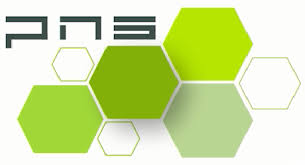

Français
Français

Tél.: +212 606-383-858
Tél.: +212 668-311-925
Fax.: +212 522-382-873
Email: pnsmaroc@gmail.com
Adresse:
46, BD zerktouni Etage 6 Casablanca Maroc
PNS est une société spécialisé dans le nettoyage à Casablanca, la
vente des produits de nettoyage ,
la vente des produits de dératisation.
Société de nettoyage à Casablanca Maroc
Votre satisfaction est une responsabilité qui nous incombe
Société de Nettoyage à Casablanca et partout au Maroc
PNS Société de Nettoyage à Casablanca
Société de Nettoyage à Casablanca et partout au Maroc, spécialisée dans le domaine du nettoyage professionnel.
Notre société de nettoyage sur Casablanca attache une grande importance à l’image de vos locaux et un vrai savoir-faire dans le secteur du nettoyage et le ménage pour cela nous vous offrons des services de qualité et des prix attractifs, par un nombre de sites partout au Maroc, notre société de nettoyage à Casablanca vous propose un contrat de nettoyage annuel et d’intervention aux besoins, comme le nettoyage des vitres, nettoyage du parquet, cristallisation de marbre, nettoyage de moquette, et nettoyage de fin chantier aussi le nettoyage et l'entretien des sols à Casablanca.
-
Société de Nettoyage industriel et professionnel à Casablanca / Nettoyage société
Afin de répondre au mieux à vos attentes et de vous garantir la propreté de votre entreprise par un discret nettoyage industriel ou un nettoyage professionnel de votre société ou usine à Casablanca Maroc. Dans notre service industriel on proposele nettoyage et dégraissage des hottes , etle nettoyage de la ventilation mécanique contrôlée (VMC) à Casablanca Maroc. -
Ponçage, Cristallisation et Rénovation de sol à Casablanca Maroc
Nous sommes une société Cristallisation et ponçage de sols à Casablanca qui modifie la structure moléculaire des sols en parquet, carrelage, mosaïque et marbre bien sûr. C’est un entretien primordial pour protéger le sol en gardant toute sa brillance. -
Nettoyage fin de chantier et après travaux à Casablanca
Nous sommes des spécialistes dans le nettoyage fin de chantier ou bien dit un nettoyage après travaux à Casablanca au Maroc que ce soit pour les particuliers ou les entreprises. Nous mettons à votre disposition des réactives et professionnelles, dans le but de satisfaire de toutes vos exigences.

C’est grâce à son savoir-faire admirable que notre société de nettoyage à Casablanca Maroc a su imposer sa vision dans un domaine en pleine expansion et en pleine mutation. L’uniformisation des méthodes d’exécution et des dispositifs ainsi que les normes mises par PNS ont permis la création d’un service d’une constance et d’une qualité inégalables.
Service pour les particuliers
Vous êtes Particulier et vous avez besoin d’un devis de Nettoyage à Casablanca pour Votre appartement , maison, villa, Nettoyage après travaux , d’autre local, nettoyage des tapis, nettoyage des canapés, nettoyage des chaises ou bien la cristallisation et le ponçage du sol, parquet, carrelage, mosaïque et marbre Contactez Nous, On vous proposez un devis gratuit avec des solutions efficaces.
Service pour les professionnels
PNS Nettoyage est une société de nettoyage à Casablanca destinés aux professionnels indépendamment de leurs types et lieux de travail : bureaux, résidences, vitres, restaurants, hôtels, des hottes et système d’extraction de la cuisine, ventilation mécanique contrôlée (VMC), collectivités. on propose aussi le nettoyage des façades et nettoyage de moquette. on propose aussi des femmes de ménage à Casablanca

Nettoyage de vitres Casablanca
Le sécialiste du nettoyage de vitres à casablanca depuis plusieurs d'années garde vos vitres et vos vitrines impeccables.Faites le choix du savoir-faire, de l'expérience et de la qualité; pour le nettoyage de vos surfaces vitrées et des Fenêtres à Casablanca.

Nettoyage de moquettes Casablanca
Grâce à son professionnalisme dans le nettoyage de moquette dans la ville de Casablanca, on vous permet de profiter pleinement de votre moquette chez vous dans de parfaites conditions. Notre entreprise nettoyage Casablanca intervient dans toutes les locaux.
Nettoyage maison Casablanca
Que ce soit pour des besoins réguliers ou ponctuels, Notre société de nettoyage propose des solutions spécifiquement adaptées à vos besoins pour le nettoyage de votre maison à Casablanca Emménagement, ménage de printemps? Faites nettoyer votre maison de fond en comble !

Nettoyage appartement Casablanca
Vous habitez à Casablanca ,vous devez emménager ou rendre votre appartement et vous n'avez ni le temps ni l'envie de faire le grand nettoyage. Ne vous tracassez pas et confiez le nettoyage complet de votre appartement à Casablanca à un professionne.
Nettoyage bureau Casablanca
Faire nettoyer votre bureau au quotidien par une entreprise de nettoyage à Casablanca. L'entretien de bureaux est notre activité principale depuis plusieurs années, première société de nettoyage qui propose un service associé à une solution de distribution de consommables.
Nettoyage parquet Casablanca
Pour préserver la beauté; d'origine d'un parquet, Notre société de nettoyage met en œuvre son savoir-faire de professionnel au service des particuliers et des entreprises pour l'entretien et le ponçage des parquets à Casablanca (ponçage, vitrification, rénovation, huilage et mise en cire).
Nettoyage restaurant Casablanca
Notre entreprise Nettoyage Casablanca vous propose des solutions adaptées à vos besoins, votre budget et la taille de votre restaurant faisant l'objet du contrat de nettoyage. Pour le nettoyage de restaurant ou local à usage alimentaire, nous pouvons n'importe quel moment.
Nettoyage Hôtel Casablanca
Spécialistes du nettoyage hôtelier à Casablanca et partout au Maroc, , on vous propose le nettoyage des hôtels de qualité, Plusieurs hôtels à Casablanca nous accordent leur confiance dans nous espérons vous compter prochainement parmi notre fidéle clientéle.